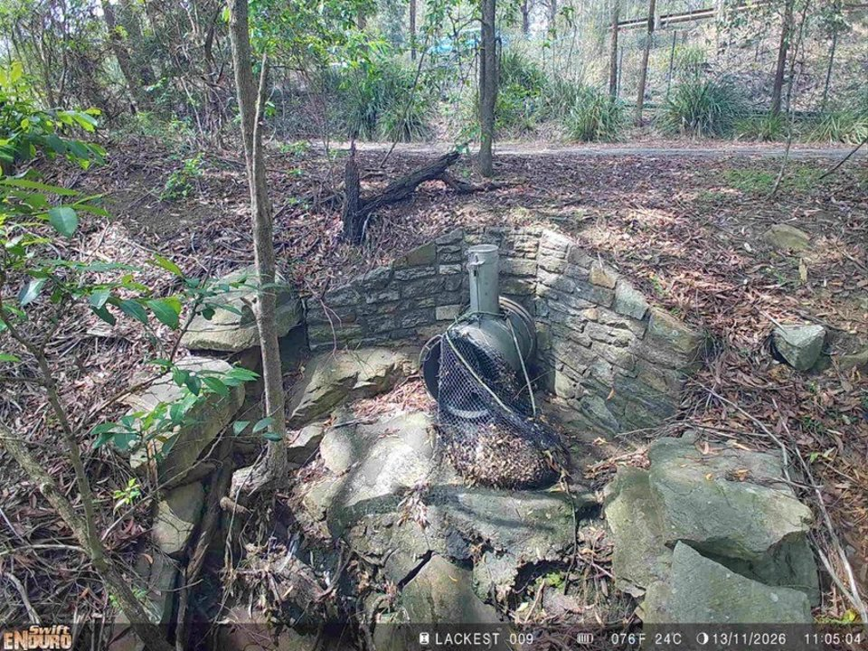

City of Parramatta · Challenge 5
Empty every litter net before the storm.
Check this morning's camera photos. Net Watch tells you if a net is full, torn or blocked, checks the rain, and puts it in your morning email. You approve every job.
Working prototype for WSTI Festi 2026. Real Council camera frames and FloodSmart gauges; fill levels, rain forecast, emails and job history are demo data.
5 nets need action before the next storm
The core: image check
It starts with one photo.

Press the button and the model reads this photo in your browser.
Not sure? Under 50% confidence, the photo goes to a person instead of raising a flag.
Today you load the photo and press Check this photo. In the pilot, it comes straight from Council's SCADA cameras every morning.
Try it in 3 steps
You're the stormwater officer. It's 7:30 Monday.
- 1
Check a photo
Open this morning's camera photos, pick one and press Check this photo. See the reading and how sure it is, then confirm or correct it.
Open today's photos →Download demo photos (zip, 0.4 MB) - 2
Read your emails
An urgent email says Lackey St West is torn: priority 92, act now. The morning email lists five more nets to deal with before the next storm.
Open the emails → - 3
Raise one job and close it
One click raises the work order. As the contractor, record the job with an after photo. As the officer, sign it off. Every step is logged.
Raise the Lackey St West job →
Want to test it properly? 5 tasks, about 15 minutes, no names recorded.
Open the User testWhy it matters
One officer, ten cameras, no one at the weekend.
- Planned trips, not wasted ones$66–119k a year freed by skipping cleans on half-empty nets (team estimate).
- Cleaner creeksCouncil's traps catch 104 t of litter a year. Full and torn nets are flagged before the storm, weekends included.
- Less hunting, more decidingOne email, one click to approve.